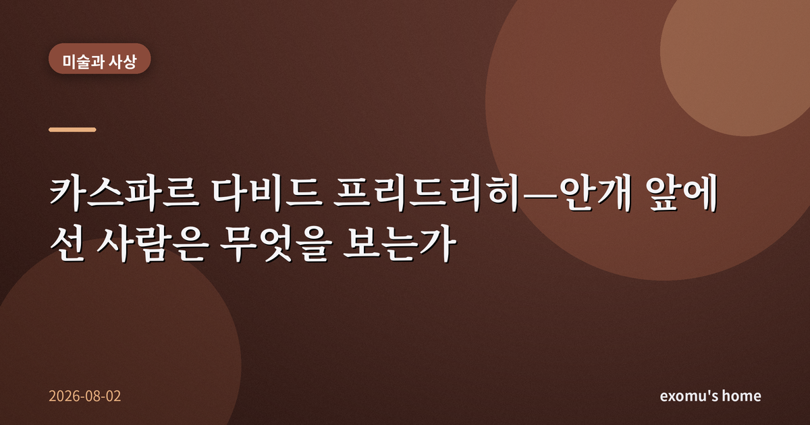
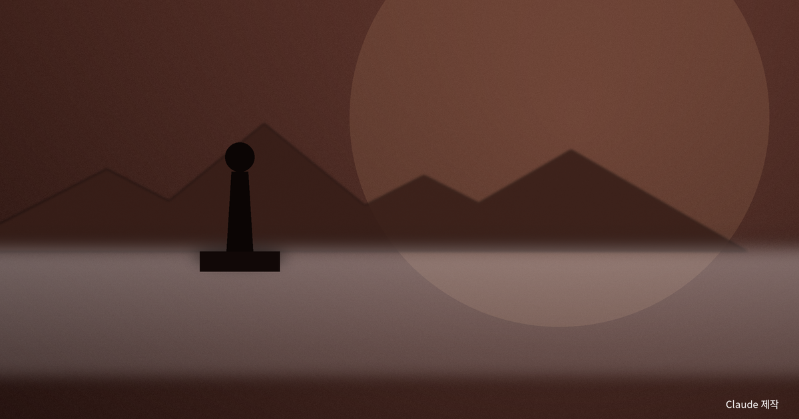
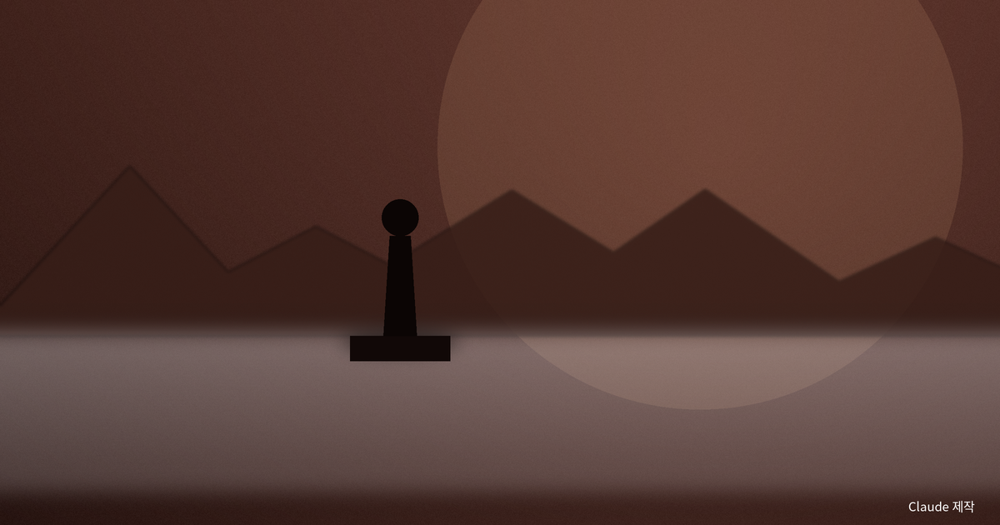
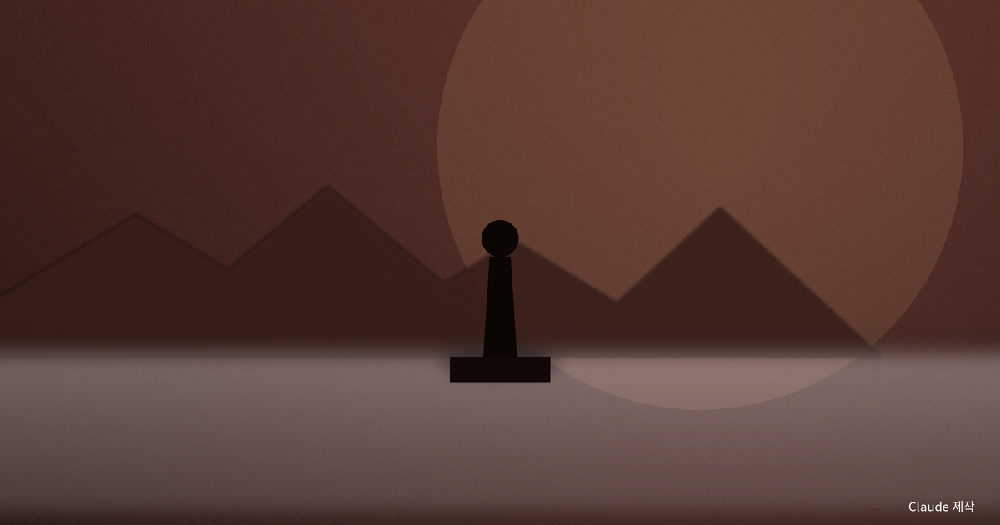
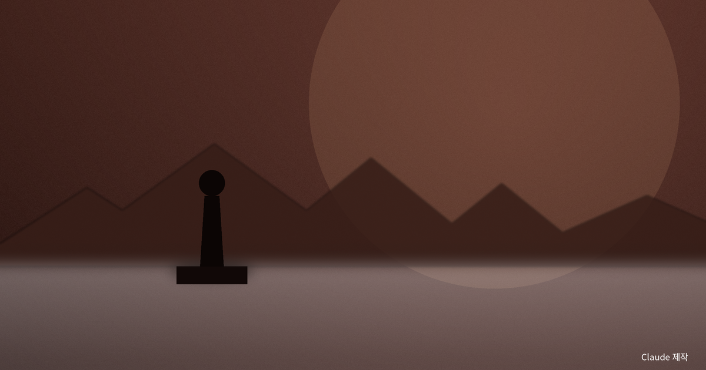

카스파르 다비드 프리드리히 — 안개 앞에 선 사람은 무엇을 보는가

안개 낀 아침, 오래된 그림 한 장
안개가 두껍게 낀 아침에 창밖을 보다가, 나는 오래전에 본 그림 한 장을 떠올렸다. 카스파르 다비드 프리드리히가 그린, 바위 위에 서서 안개의 바다를 내려다보는 한 남자의 뒷모습이다. 그는 우리에게 얼굴을 보여 주지 않는다. 지팡이를 짚고 등을 돌린 채, 발밑에서 피어올라 산봉우리들을 삼킨 회백색 안개를 조용히 응시할 뿐이다. 나는 그 그림 앞에서 늘 이상한 감정에 사로잡힌다. 아름다운데 어딘가 서늘하고, 고요한데 마음이 크게 흔들린다.
왜 하필 뒷모습일까. 왜 화가는 인물의 표정 대신 텅 빈 안개를 화면의 절반 넘게 채웠을까. 나는 그것이 우연이 아니라고 생각한다.

뒷모습으로 그린다는 것
프리드리히의 인물들은 자주 우리에게 등을 돌리고 있다. 미술사에서는 이를 '뒤에서 본 인물'이라 부른다. 얼굴이 보이지 않기에 우리는 그 사람의 감정을 읽을 수 없다. 대신 그의 시선을 따라 같은 풍경을 바라보게 된다. 그림 속 인물은 나를 대신해 그 자리에 서 있는 대리인이 되고, 나는 어느새 안개 앞에 선 그 사람이 된다.
이것이 프리드리히의 조용한 장치다. 그는 풍경을 구경거리로 내놓지 않는다. 그는 '보는 사람'을 그림 안에 심어 두고, 자연을 바라보는 그 경험 자체를 그린다. 나는 이 방식이 자연을 정면으로 묘사하는 것보다 훨씬 정직하다고 느낀다. 우리는 언제나 누군가의 눈을 통해서만 세계를 보기 때문이다.
숭고는 두려움과 매혹 사이에 있다
이 서늘한 아름다움을 오래전 철학자들은 '숭고'라는 말로 설명하려 했다. 예쁘고 정돈된 것이 주는 편안한 아름다움과 달리, 숭고는 우리를 압도하는 거대함 앞에서 솟아오르는 감정이다. 어떤 이는 그것이 두려움에서 시작된다고 보았다. 우리를 삼킬 듯한 크기와 힘 앞에서 몸이 먼저 움츠러들지만, 정작 그 순간 우리는 안전한 자리에서 그것을 바라보고 있음을 깨닫는다. 두려움과 안도가 겹치는 그 틈에서 기묘한 매혹이 태어난다.
또 다른 철학자는 숭고를 다르게 풀었다. 거대한 자연 앞에서 우리의 감각과 상상력은 한계에 부딪혀 무너진다. 그런데 바로 그 무너짐을 통해, 우리 안에 그 무한을 '생각할 수 있는' 이성이 있다는 사실이 드러난다는 것이다. 압도당하는 동시에 고양되는 이 이중의 감정. 프리드리히의 안개가 정확히 그 자리에 있다. 안개는 우리를 삼키지만, 그 앞에 선 사람은 여전히 꼿꼿이 서 있다.

자연 앞에서 작아지는 나
나는 이 그림이 던지는 감정이 결국 '크기의 감각'이라고 생각한다. 도시의 일상에서 나는 늘 무언가의 중심에 서 있다. 내 일정, 내 성취, 내 불안이 세계의 전부처럼 느껴진다. 그런데 안개의 바다 앞에 서면 그 모든 것이 갑자기 작아진다. 산도 사람도 삼켜 버리는 저 흰 침묵 앞에서, 나의 조바심은 얼마나 사소한가.
이상하게도 이 작아짐은 나를 우울하게 만들지 않는다. 오히려 어깨의 짐이 조금 가벼워진다. 세계가 나보다 훨씬 크다는 사실은, 내가 모든 것을 짊어질 필요가 없다는 위안이기도 하다. 프리드리히의 고독한 인물이 쓸쓸해 보이면서도 어딘가 평온해 보이는 이유가 여기에 있는지도 모른다.

안개는 무엇을 감추고 무엇을 드러내는가
안개는 풍경을 지운다. 봉우리의 세부도, 골짜기의 깊이도 흐릿하게 덮어 버린다. 그러나 바로 그렇게 가리기 때문에, 안개는 우리에게 '보이지 않는 것'을 상상하게 만든다. 다 보여 주는 맑은 풍경보다, 절반쯤 감춘 안개가 더 많은 것을 말한다. 삶도 그렇지 않은가. 앞이 또렷이 보일 때가 아니라, 다음이 흐릿할 때 우리는 비로소 멈춰 서서 자신을 돌아본다.

안개 낀 아침의 창가에서 나는 오래 서 있었다. 그림 속 남자처럼 등을 돌린 채, 흐릿한 세계를 바라보며. 아무것도 선명하지 않았지만, 오히려 그래서 마음이 조용해졌다. 프리드리히가 200년 전에 그리려 한 것은 안개가 아니라, 안개 앞에 선 사람의 그 조용한 마음이었을 것이다.